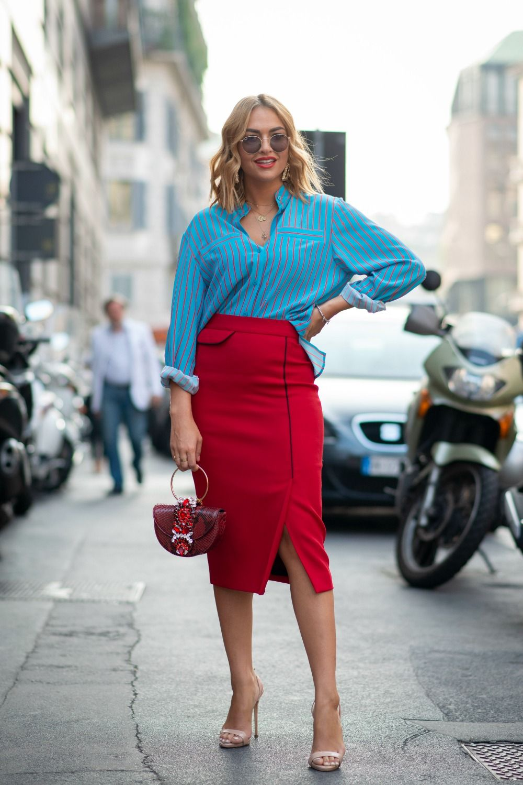
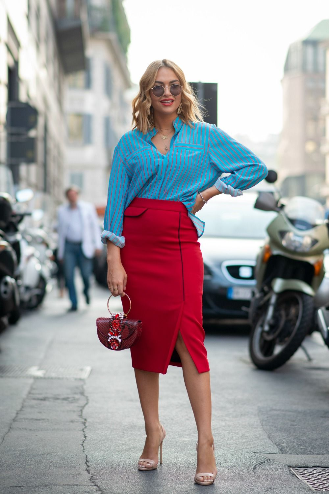
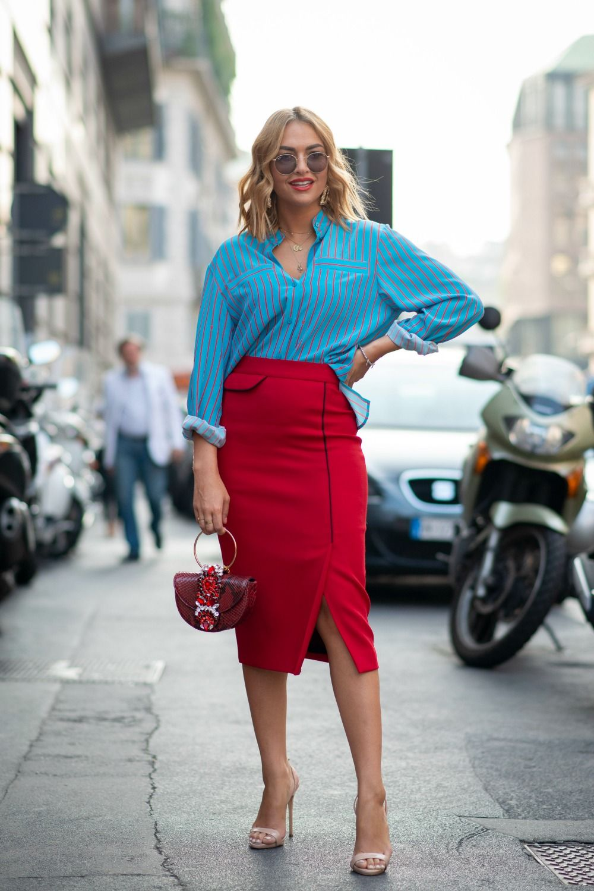

Related Articles


 



Summer office fashion is a delicate balance of staying cool while maintaining a professional and stylish appearance. As temperatures rise, it becomes essential to choose fabrics that are breathable and comfortable, allowing you to navigate your workday with ease. Opt for lightweight materials such as cotton, linen, and lightweight wool blends, which offer breathability and help regulate body temperature.
A lightweight blazer is perfect for summer office wear. Opt for unlined or partially lined blazers in breathable fabrics. They can easily be removed when you're outside but provide a professional layer for indoor meetings.
Choose blouses and shirts made from lightweight, breathable fabrics. Sleeveless or short-sleeve options are great for staying cool, and pairing them with a blazer or cardigan keeps the look office-appropriate.
Minimal Makeup Heavy makeup can feel uncomfortable in the heat. Opt for a light foundation or tinted moisturizer with SPF, waterproof mascara, and a natural lip color.
Hairstyles Keep your hair off your neck with stylish updos or braids. Using hair accessories like clips and headbands can add a professional touch to your look.
Closed-toe shoes are often required in professional settings, but there are summer-friendly options available. Loafers, ballet flats, and low-heeled pumps in breathable materials like leather or canvas can keep your feet cool. If your office allows for more casual footwear, stylish sandals can be a great option.
Navigating summer office fashion can be a breeze with the right strategies. By opting for breathable fabrics, light colors, and tailored pieces, you can stay cool and comfortable while maintaining a professional appearance. Embrace versatile dresses, lightweight blazers, and chic accessories to create a polished look that suits any office setting. Incorporating sustainable fashion choices not only enhances your comfort but also supports eco-friendly practices. With these tips, you can confidently enjoy the sunny season, striking the perfect balance between style and practicality in your work wardrobe. Stay cool, stay stylish, and make the most of your summer at the office!
